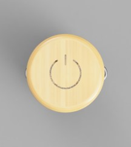
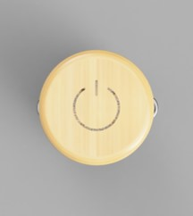
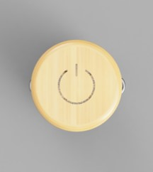

T-F-T-L STOOL
 

“关灯”以家用锅具作为主体，坚固的同时表达了家用器具的含义，它挑战宜家宜“家”的定义，是为公共场所设计的供游客歇脚的板凳。
当“关灯”出现在公共场合时，它发光成为一个休息区域的指引，帮助旅客更快速地找到一个歇脚处。就像像按动一个巨大的开关一样，游客“坐下”则座椅下降灯光熄灭，让其他未被占用的板凳能够更加显眼。

“关灯”以家用锅具作为主体，坚固的同时表达了家用器具的含义，它挑战宜家宜“家”的定义，是为公共场所设计的供游客歇脚的板凳。
当“关灯”出现在公共场合时，它发光成为一个休息区域的指引，帮助旅客更快速地找到一个歇脚处。就像像按动一个巨大的开关一样，游客“坐下”则座椅下降灯光熄灭，让其他未被占用的板凳能够更加显眼。